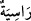

SİZİ SARSMASIN DİYE
YERE ULU DAĞLAR KOYDU
10. O, gökleri görebildiğiniz bir direk olmaksızın yarattı, sizi sarsmasın diye yere
de ulu dağlar koydu ve orada her çeşit canlıyı yaydı. Biz gökyüzünden su indirip,
orada her faydalı nebattan çift çift bitirdik.
11. İşte bunlar Allâh’ın yarattıklarıdır. Şimdi (ey müşrikler!) O’ndan başkasının
ne yarattığını bana gösterin! Hayır (gösteremezler)! Zâlimler açık bir sapıklık
içindedirler.
“O,” Allah Teâlâ “gökleri,” yedi göğü, kürsüyü ve arşı “görebildiğiniz bir direk
olmaksızın” yâni direksiz ve sütunsuz olarak “yarattı.”
Bilesin ki, göklerin ve yerin bir nizam üzerinde, herhangi bir düzensizlik ve bozukluk
olmaksızın durması, Melik ve Müteâl olan Allâh’ın kudreti sayesinde olmaktadır.
Allah Teâlâ’nın, üzerlerinde ilâhî kudretin tecelli ettiği seçkin kulları vardır. Onlar
göklerin mânevî direkleri ve mutlak mânâda âlemin nizâmını sağlayan sebeplerdir.
Onlar her asırda bulunurlar. Kıyâmet yaklaştığı zaman onlar peşlerinde halef
bırakmaksızın bu dünyâdan intikal ederler. Böylece o mânevî direkler yok olur.
Neticede âlem, ruhsuz bir şekilden ibaret kalır. Âlemin parçaları, ölünün parçalarının
dağıldığı gibi dağılır. Zâhirde olanlar bâtında olanlara döner. Bu hâli ancak kâle/söze
mağlup olanlar inkâr eder. İnkâr ve ısrardan Allâh’a sığınırız.
“Sizi sarsmasın diye yere de ulu dağlar koydu”
“, bir şeyi alabileceğin ve görebileceğin şekilde bir yere atmaktır. Sonra örfte
her türlü atış için kullanılır olmuştur. “ ise sâbit demek olan “ kelimesinin
çoğuludur. Âyette kasdedilen ise sâbit dağlardır. Çünkü dağlar yeryüzünde sâbit bir
şekilde durmaktadır ve yerin sâbitliği de onlarla sağlanmaktadır. Sâbit dağlar, her ne
kadar fevkalade büyük varlıklar ise de Allah Teâlâ onları küçümsemek ve sayılarını az
görmek maksadıyla, bir kimsenin eline alıp yere attığı çakıl taşlarına benzetmiştir. Bu
ancak Allâh’ın büyüklüğünü tasvir ve kudretini temsil etmekten ibârettir. Çünkü akıllara
durgunluk verecek her büyük iş, şüphesiz Allah Teâlâ’ya kolaydır. Yâni Allah yere
“Ol!” buyurmuş, o da olmuş ve yeryüzü hâline gelmiştir. Bu yer, başlangıçta sallanır
halde iken dağlarla sâbitleştirilmiştir. Fakat kimse onun neden yaratıldığını